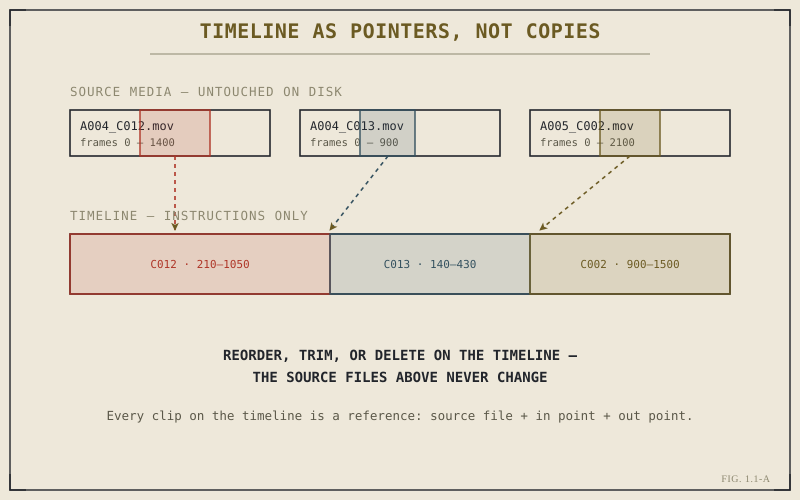

Ask someone who's never edited before what an editing program does, and they'll usually say something like "it lets you cut video clips together." That's true in the way that "a motorcycle has two wheels" is true — accurate, and almost entirely beside the point. What actually makes DaVinci Resolve, or any modern editor, useful isn't that it lets you join clips. It's that it lets you change your mind, instantly, as many times as you want, without ever touching the original footage.
That single property — the ability to change your mind without cost — is called nonlinear editing, and it's the idea this entire book is built on top of. Before you learn a single keyboard shortcut or menu location in Resolve, it's worth understanding exactly what problem nonlinear editing solves, because every design decision in the software, from the Media Pool to the node graph on the Color page, exists in service of that one property.
The Problem Nonlinear Editing Solves
For most of the twentieth century, editing was physically linear. Film was cut with scissors and spliced with tape, in order, from beginning to end. Later, when video replaced film for most production, editing became tape-to-tape: you played your source tape, found the moment you wanted, and recorded it onto a master tape at the correct point in the sequence. Both methods shared the same brutal constraint — the order you assembled the piece in was largely the order it had to stay in, because reordering meant physically redoing the work downstream of the change.
Picture assembling a five-minute video the tape-to-tape way. You lay down shot one, then shot two, then shot three. Now the director wants to swap shots two and three. On a linear system, that's not a small edit — it's a full re-record of everything from shot two onward, because the tape doesn't have "shots," it has one continuous physical recording that has to be rebuilt in order every time something upstream changes. Editors of that era learned to plan meticulously before touching the equipment, because revision was expensive.
Nonlinear editing didn't just make editing faster. It changed what editing decisions could be made — because decisions that cost nothing to reverse get made much more freely than decisions that are expensive to reverse.
Nonlinear editing removes that constraint entirely by changing what the timeline actually is. It's not a re-recording of your footage in order. It's a list of instructions that says, in effect: "at this point in the output, show this range of frames from this source clip." Reordering shot two and shot three isn't a physical re-record anymore — it's rewriting two lines in that instruction list. The underlying footage never moves, never gets copied, never gets re-encoded. Only the instructions change.
The Timeline Is a Set of Pointers, Not a Copy
This is the single mental model worth carrying through the rest of this book: a Resolve timeline does not contain video. It contains pointers into video. When you drag a clip from the Media Pool onto a timeline, Resolve doesn't duplicate the file and paste it into the sequence. It creates a reference that says "play frames 214 through 340 of this source file, starting at this point in the timeline." The actual pixel data stays exactly where it was, on your drive, in the original camera file.

The timeline as a list of pointers into unmodified source media — not a copy of it.
This is why editing is described as non-destructive. "Destructive" editing would mean the act of trimming a clip actually deletes frames from the file on disk — the way editing a photo in a very old paint program permanently overwrote pixels. Nonlinear editing never touches the source file. Trim a clip shorter, and you've only changed which range of frames the pointer refers to. Delete it from the timeline entirely, and the source file is completely unaffected — you could drag it back in and it would be exactly as it was.
Once you actually believe this — not just know it intellectually, but trust it enough to act on it — editing changes. You stop being precious about early decisions, because nothing is permanent until you deliberately render a final file on the Deliver page. You try the alternate cut. You test the shot in a different place. You delete a scene entirely, knowing it's one undo, or one drag from the Media Pool, away from coming back. The cost of experimentation drops close to zero, and editing stops being a process of careful, sequential construction and becomes a process of iteration.
Random Access Changes How You Think, Not Just How You Work
There's a second property bundled into "nonlinear" that's just as important as non-destructiveness: random access. A tape deck can only get to frame 40,000 by physically winding through frames 1 through 39,999 first. A file on a drive doesn't work that way — Resolve can jump straight to any frame of any clip in the Media Pool the instant you ask it to, because accessing frame 40,000 of a digital file costs the same as accessing frame one.
Combine random access with non-destructive editing and you get the actual working style this book will teach: constant, cheap reordering. You can build a rough assembly in ten minutes by dragging clips onto the timeline in roughly the right order, then spend the next hour refining — swapping shots, adjusting where cuts land, trying a scene both with and without a transition — without ever "starting over." Every earlier version of your sequence is still just a few undos away, or preserved entirely if you duplicated the timeline before making a big structural change.
Why This Matters More in Resolve Specifically
Every modern NLE — Premiere, Avid, Final Cut, Resolve — is nonlinear in this fundamental sense. But Resolve pushes the idea further than most, and understanding why is the setup for the rest of Part I. In many editors, "editing" and "color grading" happen in genuinely separate applications, or at best separate modules that don't share state cleanly. In Resolve, the Edit page's timeline and the Color page's grades reference the exact same underlying project — a trim you make on Edit is instantly reflected in Color, and a grade you build on Color is instantly reflected back in Edit and on Deliver.
That's nonlinear thinking applied not just to shot order, but to the entire post-production pipeline. Just as a trim doesn't destroy footage, a color grade doesn't destroy the underlying image data either — it's stored as a stack of instructions (nodes, which Chapter 1.3 covers in depth) sitting on top of the original pixels, adjustable and reversible at any point, on any clip, at any time. Chapter 1.2 walks through exactly how Resolve organizes this into seven distinct pages that all share one project. For now, the point to take away is simpler: everything in Resolve, from a single trim to a full grade, follows the same non-destructive, randomly-accessible logic you just learned in this chapter. Once that clicks, the rest of the software stops looking like a maze of menus and starts looking like one consistent idea, applied over and over.
Key Concepts to Remember
- Nonlinear editing means the timeline is a list of instructions pointing into source media, not a copy of that media — nothing you do to a timeline touches the original files.
- "Non-destructive" isn't a marketing word — it's a literal guarantee that trims, reorders, and deletes on a timeline never modify the source file on disk.
- Random access means jumping to any frame of any clip costs the same, which is what makes constant reordering and revision practical instead of expensive.
- Resolve extends non-destructive, instruction-based thinking beyond the timeline — into color grading, compositing, and audio — which is why its seven pages can all share one live project.
Cross-References Forward
| → Ch. 1.2 | Explains how the non-destructive, shared-project idea introduced here is physically organized into Resolve's seven pages. |
| → Ch. 1.3 | Extends this same instruction-based logic to the node graph, the structure underneath both Color and Fusion. |
| → Pt. IV | The Edit Page: Timeline Fundamentals — where the pointer-based timeline described here becomes a hands-on working tool. (Not yet published.) |